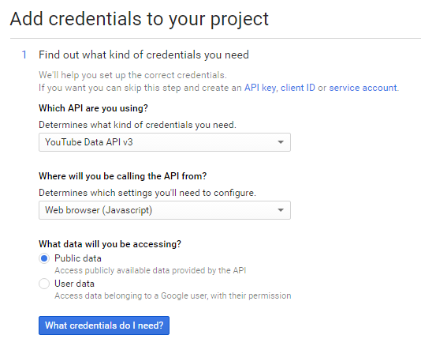

Linux installation
Welcome to the installation guide for WildBeast on Linux! In this guide, we'll walk you through the installation and deployment process for WildBeast on Linux.
Prerequisites
- A Linux server
- Type: VPS is enough to run WB, dedicated is a bit overshooting unless you have something else running there as well
- OS: Ubuntu LTS or latest, optionally Debian 8
- RAM: May work on 256 MB, 512MB is recommended in case you plan on having it on just a few servers. Scale up if necessary
- Processor: Single core @ 2.60 GHz or higher will work just fine, as above
- SSH access to the server
- Programs
Before you begin
We highly recommend that you go through a basic Linux server setup before starting this, which includes adding a new user, disabling root login (If you feel so) and adding SSH key authentication for logins. If you have no idea what we mean by this, see the Digital Ocean guides for initial server setup. When this is complete, you can proceed to the next step.
Installation
During installation, some administrative tasks will be performed. For those tasks to work (Especially installations), you need to run them in sudo mode. We'll let you know when that's necessary, and even if we fail to do so, Linux will probably gladly let you know that sudo is required.
As in, it will yell at you for trying to do something administrative without sudo. Loud. Like really, really loud.
Danger
While you may think just running commands as root is easier, it's not in any way advised to do so. Root can really BLEEP your BLEEP up if you do something wrong with it. To avoid those situations, please use sudo instead.
Installing Node
First off, we'll install Node.js, the runtime WildBeast uses. Run these commands sequentially.
curl -sL https://deb.nodesource.com/setup_6.x | sudo -E bash -
sudo apt-get install -y nodejs build-essential
Now you can check your Node version from the console by running node -v which should be v6.10.2 at the time of writing.
-bash: curl: command not found
Curl may not come preinstalled on all Ubuntu and/or Debian OS's. If this is the case, just run sudo apt-get install curl and try again.
Retrieving WildBeast
Now we'll retrieve the WildBeast source code via Git.
If you don't have Git installed already, run sudo apt-get install git. Clone the Git repository with git clone https://github.com/TheSharks/WildBeast && cd WildBeast.
If you encounter big problems during installation, you can delete the directory with rm -d -f -r ~/WildBeast and reclone the repository.
Installing additional dependencies
Some additional dependencies also need to be installed to run WildBeast properly.
First on the list is FFMPEG. This is a crucial step if you want to use music playback. The install process varies a bit based on the Linux distribution, but we have the three supported options outlined below.
Commands to install FFMPEG on Ubuntu 14.04 (click here)
sudo add-apt-repository ppa:mc3man/trusty-media && sudo apt-get update && sudo apt-get install ffmpeg -y
Commands to install FFMPEG on Ubuntu 16.04 (click here)
sudo apt-get install -y ffmpeg
Edit /etc/apt/sources.list from the terminal using vi or nano, this will require the use of to look like this now: Enable the backports repo by adding this line at the bottom of the file: Now run the following commands to update the repo information and install FFMPEGCommands to install FFMPEG on Debian 8 (click here)
sudo. Alternatively edit this file using SFTP with the methods described later in this guide.
Enable the non-free repo by finding and changing the following or similar line: deb http://mirror.us.leaseweb.net/debian/ jessie main
deb http://mirror.us.leaseweb.net/debian/ jessie main non-free
deb http://mirror.us.leaseweb.net/debian/ jessie-backports main contrib non-free
sudo apt-get update && sudo apt-get install -y ffmpeg
Without changing working directory, we'll now install the Node modules required for usage in WildBeast. Run npm install.
This will likely take a while as it has a lot to retrieve. If you get warns (Yellow text) you can ignore them as long as the output resembles to the following.
WildBeast@4.3.0 /home/(yourhomedir) +-- cleverbot-node@0.2.2 | +-- crypto@0.0.3 | `-- http@0.0.0 +-- discordie@0.8.1 (...)
Installing RethinkDB and creating the DB
As of WildBeast version 4.0.0, RethinkDB is used to store server-specific data. This includes server owner, customize options and a whole bunch of other things.
Warning
Do not change RethinkDB options or execute commands outside of the ones we tell you to unless you understand RethinkDB and can fix it yourself in case you mess up.
Run the following commands one at a time.
Commands to install RethinkDB on Ubuntu (click here)
source /etc/lsb-release && echo "deb http://download.rethinkdb.com/apt $DISTRIB_CODENAME main" | sudo tee /etc/apt/sources.list.d/rethinkdb.list
wget -qO- https://download.rethinkdb.com/apt/pubkey.gpg | sudo apt-key add -
sudo apt-get update
sudo apt-get install rethinkdb
Commands to install RethinkDB on Debian (click here)
echo "deb http://download.rethinkdb.com/apt `lsb_release -cs` main" | sudo tee /etc/apt/sources.list.d/rethinkdb.list
wget -qO- https://download.rethinkdb.com/apt/pubkey.gpg | sudo apt-key add -
sudo apt-get update
sudo apt-get install rethinkdb
When RethinkDB has installed, run rethinkdb --daemon. Keep in mind if you restart your server you will need to run this again to start the database service. If RethinkDB runs without errors, you should be good to go.
Configuration
Setting up SFTP
Next we'll make a config file for WildBeast. Unless you love your command line and editing stuff that way, this is the step where we'd advise you to bring out FileZilla. Using this program, you can transfer files from and to the server. This speeds up the editing process.
Start up FileZilla and open the server manager by hitting Ctrl+S. Click "New Site" and name it whatever you prefer. Then fill in the server's IP address. By default, SFTP (SSH File Transfer Protocol) connections go to port 22. In the dropdown menu below, select SFTP. Don't use normal FTP!
In the field below that, you'll be setting the login method. Depending on the level of privacy or ease you want, you can select either Normal or Ask for password. Fill in your login details accordingly.
Tip
Unless you know what you are doing, don't touch the rest of the tabs. They are fine as they are.
Your site should be something like the example below.

Retrieving the example config
Connect to the server via FileZilla. You should now see the so-called remote site in FileZilla. Open the WildBeast directory. In there you can find a file named config.example.json.
Double click the file to download it for editing. On the left-hand side of the screen, you can see where the file was downloaded.
Find config.example.json on your PC and open it using Notepad++ or any other code editor.
What not to do
Don't open the file with Windows Notepad. This will cause a bucketload of issues that just complicate the install process. Use a modern text editor!
The config file
When opening the config file, you should have a file that looks like the example config.
We'll now walk you through the different sections in the config and what they do.
Bot section
| Property | Explanation | Type |
|---|---|---|
| token | OAuth token for the bot. | String |
| oauth | The OAuth URL for the bot. | String |
Database section
| Property | Explanation | Type |
|---|---|---|
| host | Points to WildBeast's database, localhost by default. | String |
| port | Specifies which network port the RethinkDB server is running on. | Number |
| password | Password to RethinkDB user. | String |
| user | RethinkDB user account to use for accessing the database. | String |
Settings section
| Property | Explanation | Type |
|---|---|---|
| prefix | The command prefix the bot will use. | String |
| autodeletemsg | Automatically delete music-related messages after a while. | Boolean |
| deleteTimeout | The amount of time after which to delete the messages. | Number |
| deleteTimeoutLong | Same as above, but for messages that have a longer timeout. | Number |
| maxvcslots | How many concurrent voice connections the bot can have until it won't join more. | Number |
Bezerk section
Warning
Do not modify any of these settings! They're for internal use only.
| Property | Explanation | Type |
|---|---|---|
| use | Whether Bezerk shall be used or not. | Boolean |
| uri | Specifies the websocket address for the Bezerk server. | String |
Elasticsearch section
Warning
Do not modify any of these settings! They're for internal use only.
| Property | Explanation | Type |
|---|---|---|
| use | Whether Elastic shall be used or not. | Boolean |
| client/host | Specifies the address for the Elastic server. | String |
Permissions section
| Property | Explanation | Type |
|---|---|---|
| master | The highest possible access level of Infinity. Full permissions. | Array<String> |
| level1, level2, level3 | Settable access levels that give users access to certain commands. | Array<String> |
Note
By default, when WildBeast joins a server it will set the owner's access level to 4. This is to give them control over normal users.
API keys section
| Property | Explanation | Type |
|---|---|---|
| imgflip | Your imgflip login details. | String |
| For retrieving data from YouTube. | String | |
| twitchId | For retrieving status of whether a user on Twitch is streaming or not. | String |
| imgur | For retrieving random memes from Imgur. | String |
| cleverbot_user | Username to the cleverbot.io API, used in the cleverbot command. | String |
| cleverbot_key | Key to the cleverbot.io API, used in the cleverbot command. | String |
Making the config
- OAuth app
- We'll start off by creating an OAuth application in Discord's developer interface so that the bot can login.
- Go to the Discord Dev dashboard and create a new application.
- Name it whatever you prefer and give it a fancy picture. Fill in a description if you want to, then click "Create application".
- Now you'll have a more full-fledged app page. Click "Add Bot User" and confirm to make it a bot.
- Here you'll get a Client ID and a token. Reveal the token (Not the secret) and replace "Bot token" with that in the config.
- Next we'll make an OAuth URL for the bot so it can be added to the server.
- Just put this placeholder URL somewhere for now, don't open it as it will not work.
https://discordapp.com/oauth2/authorize?&client_id=CLIENTID&scope=bot&permissions=536345655 - Go back to the app page, and copy the Client ID.
- Replace the
CLIENTIDplaceholder in the URL above with the ID you just copied. You can open the URL to test that you did it right. - If the URL works as intended, copy it and replace "Bot OAuth URL (...)" in the config with the one you copied.
- You can also open the URL and add your bot to the server at this point, so you don't forget it. It will have the permissions it wants precalculated due to the number after the
permissionsproperty. Just select your server from the dropdown list and add it. The bot won't do anything at this stage because we're not finished yet. - If you can't select your server, it might be that you lack Manage Server permissions.
- Just put this placeholder URL somewhere for now, don't open it as it will not work.
- We'll start off by creating an OAuth application in Discord's developer interface so that the bot can login.
- Prefix and other settings
- Setting the command prefix isn't really rocket science. This can be any special character, for instance
%,&and so forth. - You can also use multiple characters as a prefix, for instance
!!and//. Avoid common single-character prefixes like!and/to avoid initial prefix conflicts. These can however be resolved withcustomizeand changing the prefix for the server. - Note that there is always a so-called global prefix: A mention. Saying
@BotNamein chat will function as a prefix as well. This needn't be specified in the config as it's always active.
- Setting the command prefix isn't really rocket science. This can be any special character, for instance
- The rest of the options are straightforward.
autodeletemsgcan be true or false, the message deletion times can be whatever you fancy in milliseconds andmaxvcslotsis just a number. - Permissions
- This is a section that has a very interesting gimmick to it.
- WildBeast has a command named
setlevelwhich will set the level of a user. However, that is written into a server-specific config. Which means that if you set the level of someone to 2 in Server1, they will not be level 2 in Server2, for example. - The permissions fields here are so-called global permissions, and will apply unless a server-specific level is set.
- Use this to add technicians and others who need permissions regardless of where the bot is.
- WildBeast has a command named
- You can specify users here by adding their IDs into the fields. Only the master field is mandatory.
- You can get the ID of a user by either "backlash mentioning" them, which means to say typing
\@Userin chat or by enabling Developer Mode (Personal Settings -> Appearance -> Enable Developer Mode) and right-clicking on someone, subsequently selecting Copy ID from the list and pasting it in between the quotes. - Remember to follow the example syntax in the master field when adding multiple users!
- You can get the ID of a user by either "backlash mentioning" them, which means to say typing
- This is a section that has a very interesting gimmick to it.
- API keys
- General notice: Anything within these fields is sensitive and could do much harm if revealed to the public. Therefore it is imperative that you keep this to yourself. WildBeast maintainers will NEVER ask for your login details or API keys. Only show the options to trusted WildBeast maintainers in WildBot's Territory.
- imgflip
- The procedure for getting this isn't tricky. Just go to https://imgflip.com, create an account and input your username and password into the fields.
- Google
- This API is used to retrieve data from YouTube, related to music playback.
- Go to https://console.developers.google.com and create a new project. Name it whatever you fancy. Nothing else needs to be changed unless you want to change the project ID or the app engine location.
- Wait a while as the project is being created.
- When the creation process is completed, you'll get taken to the Dashboard screen of the project. In the sidebar on the left, click "Library".
- This will take you to the API library. Select "YouTube Data API" as highlighted below.

- When the API page opens, click the "Enable" button in the top bar. Then you will get a notification saying that you need to create credentials. That's exactly what we will do.
- Click the "Go to credentials" button. In the next dropdowns, make them look like following. 
- Hit "What credentials do I need?" and the page will generate a Google API key for you. Copy the API key and replace the "A google key" placeholder with that key in the config.
- This API is used to retrieve data from YouTube, related to music playback.
- Twitch
- This API is used with the
twitchcommand. This will be the client ID the bot passes to Twitch when retrieving stream status.- Go to the Twitch Connections page, scroll down to the bottom and click "Register new application".
- Fill in the fields. Name should be your app name, and set the Redirect URI to
http://localhostunless you want something to function differently. Set the app type to "Chat Bot" as that's what you're basically doing here.
- Click "Register". This will take you to the application management page. Down towards the bottom, there will be a section saying "Client ID".

- Copy that character sequence and replace the "A twitch Client-ID" placeholder in the config with that ID.
- This API is used with the
- Imgur
- This API is used in conjuction with the
randommemecommand to pull random memes from Imgur.- Go to the Imgur App Registration.
- Fill in the application name you prefer to use. Set Authorization type to "Anonymous usage without user authentication" as no further auth will be needed for pulling memes.
- Fill in the email you fancy to receive notifications about this app in.
- Description... Well, anything you find useful there.
- You should end up with the below view.

- Solve the CAPTCHA and hit "Submit" on the bottom of the page. This will take you to the page where you can see your client ID and secret.

- Copy the Client ID and replace the "A Imgur Client-ID" placeholder with that value.
- This API is used in conjuction with the
- Cleverbot
- This API is used in conjuction with the
cleverbotcommand to do cleverbot discussions.- Go to cleverbot.io and login to get your API user and key.
- After logging in, copy the contents of the "API User" and "API Key" fields and paste them into the appropriate fields in the config, API User to cleverbot_user and API Key to cleverbot_key.

- This API is used in conjuction with the
That's all, your config should now be ready to rock! Save it as config.json and upload it to the server via FileZilla.
Warning
Don't save the file as config.example.json as the bot will error if you do. Don't hit Ctrl+S, hit Ctrl+Alt+S!
Running the bot
Congratulations, your WildBeast instance should be ready to launch!
WildBeast has a system built in to create the required databases and tables for you without extra effort. To do this, run npm run-script dbcreate in the WildBeast directory.
When this has finished, it will tell you if the necessary database and tables have been created or already existed. To test if you've done everything correctly, you can do a "test run" with the bot. This means not making it permanently available, just testing if any errors are spat out when running.
Run node DougBot.js in the bot's root directory to start it. If the bot runs without any errors, you have had success so far!
You can test simple functionality by running the ping command (With your desired prefix) in a text channel that the bot can see. If it answers "Pong!", then congratulations, you have successfully set up WildBeast!
RethinkDB Dashboard
Summary
The following information is for those who need to access the RethinkDB web interface to create, delete or edit the database contents. This is for users that want maximum control and are familiar with database engines, so skip this if you don't meet those criteria.
Should you need to access the RethinkDB dashboard remotely to create, delete or edit the information stored within, there are a few possible methods of approach. You may create a tunnel using SSH to forward traffic from your browser to the server or run RethinkDB using the --bind all option with firewall rules to only allow your IP address to connect. This guide will not provide instructions for the aforementioned due to their heavily distribution-dependent nature.
Creating an SSH tunnel in PuTTY
- Fill in the IP or FQDN in the "Host name (or IP address)" field. Alternatively, load an already saved profile by clicking on it once and then hit
Load. - Under the category box you will see
Connection, go toSSHand click the+sign. - Beneath this go to
Tunnels.Source portcan be anything but this guide assumes it is 8080.Destinationis127.0.0.1:8080, the radio buttons below areLocalandAuto. It should look like the following.
- Now you need to click on the
Addbutton and thenOpento start the SSH session. You will be prompted for your server's username and password.
Open your favorite browser and go to http://127.0.0.1:8080. You should have your RethinkDB dashboard visible.

Background running WildBeast
With the current system that we described above, the bot will run until the SSH session is closed or an error occurs that ends the process. How can we combat this? The answer is: PM2!
PM2, short of Process Manager 2, is a Node app intended to run and manage multiple apps running on one account in a Linux environment, which enables more than one process running at a time.
Tip
Our official WildBeast instance, WildBot, uses PM2!
Installing PM2 and starting the bot
Before doing this, hit Ctrl+C (Close command) to shut down WildBeast if it's still running. You can install PM2 with npm install -g pm2.
When PM2 is installed, navigate to the WildBeast install directory (cd ~/Wildbeast if you are in the server root). Then run pm2 start DougBot.js. PM2 should start the process and return a small process table with DougBot listed. The bot should now be online in your Discord server as well.
You can find out more about PM2 by typing pm2 in the console.
And that's it! You are now ready to start using your very own WildBeast instance!
Keep in mind, if you have further questions or need help, we're around over at our official server! Link below.
On the behalf of the WildBeast team, we hope you enjoy your bot!